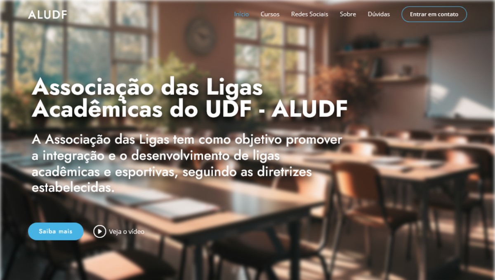

Pioneirismo
No inicío do segundo semestre letivo de 2024 eu, João Paulo da Costa Rabelo, fui convocado para a cerimônia de nomeação dos alunos embaixadores. Durante a cerimônia, tive oportunidade de passar uma mensagem para os embaixadores presentes. Aproveitei aquele momento para reforçar que embora nosso trabalho seja voltado para a preservação de um bom ambiente acadêmico, é importante ter em mente que trabalhamos em prol do coletivo, dos nossos colegas de turma, curso e faculdade como um todo.
Mesmo tendo certa proximidade com a reitoria, nossa "tribo" continua sendo o corpo discente do Centro Universitário, e como em todo grupo, indivíduos com inclinação à liderança aparecerão uma hora ou outra. E naquele dia não foi diferente, assim que a mestre de cerimônias chamou pela Ester Giovanna, apresentou não somente uma aluna embaixadora, mas também a presidente da Associação das Ligas do UDF, presidente da Liga Acadêmica de Enfermagem em Trauma, Emergência e Simulação (LAETES) e representante de turma.
Naquele momento, além de impressionado com tamanha dedicação em não somente participar, mas presidir duas organizações, fiquei curioso para saber o por quê de eu nunca ter ouvido falar de uma liga acadêmica no meu curso. A resposta era simples, ninguém nunca havia criada uma até então. Tendo em vista o disputado mercado de trabalho na área da tecnologia, pensei nos benefícios que uma entidade acadêmica voltada para o desenvolvimento de projetos e facilitação de network poderia trazer para os membros. Com apoio e instrução da Ester Giovanna, dei início na criação do que seria a primeira liga acadêmica dos cursos de tecnologia do UDF.
"Somente aqueles que arriscam ir longe demais podem descobrir até onde é possível chegar." - Eliot, T. S.
Trabalhei na criação do nome, sigla, estatuto, identidade visual, edital, resumos sobre os assuntos que seriam abordados durante a segunda etapa do processo seletivo (prova), elaboração dos formulários e divulgação do período de inscrições. Mesmo sendo muitas etapas, o fato de estar trabalhando em prol de um bem maior serviu como combustível para a criatividade, tomada de decisões e execução.
Inovação
Nunca havia feito algo assim antes e sendo franco, por vezes tive receio de fazer algo errado. A solução que encontrei foi seguir minha intuição e ter em mente que por se tratar de um projetor inovador, erros certamente aconteceriam e através deles teríamos a oportunidade de melhorar nossa organização. Com todos os cargos da Diretoria Executiva preenchidos, era hora de dar início na seleção dos membros ligantes.
Nos formulários haviam perguntas sobre as áreas de interesse, conhecimentos prévios, disponibilidade de tempo, participação em outros projetos extracurriculares, questionamentos que serviriam de base para a seleção dos membros e alinhamento das atividades da liga com o passar to tempo. No final do processo seletivo, 35 estudantes agora faziam parte da primeira liga acadêmica de todos os cursos de tecnologia. Foi um sucesso!
Nosso primeiro projeto foi o site para a Associação das Ligas do UDF (ALUDF), que teve como objetivo a divulgação das informações das ligas acadêmicas e seus cursos de forma organizada. Tendo contado com a participação de 8 membros no desenvolvimento do site e 2 membros no planejamento, o projeto foi entregue dentro do prazo e foi muito bem avaliado pelos membros da diretoria das ligas associadas.
Caso tenha interesse em conferir nosso trabalho, o site está no ar! Acesse agora mesmo: https://aludf.com/
Próximos passos
Muitos outros projetos serão desenvolvidos, atividades serão realizadas e nossa organização continuará exercendo com excelência as tarefas que forem propostas. Estamos no início das nossas atividades, mas até o presente momento já foram criados 4 e-book's, 3 site e temos um sistema de gerenciamento e automação em desenvolvimento. Não perca a chance de conferir como é o desenvolvimento de uma organização acadêmica pioneira, e caso seja um estudante, fique atento ao processo seletivo! O período de inscrição e seleção é sempre no início de cada semestre letivo.
Agradecemos pela sua atenção e interesse em conhecer um pouco mais sobre a LAACT!